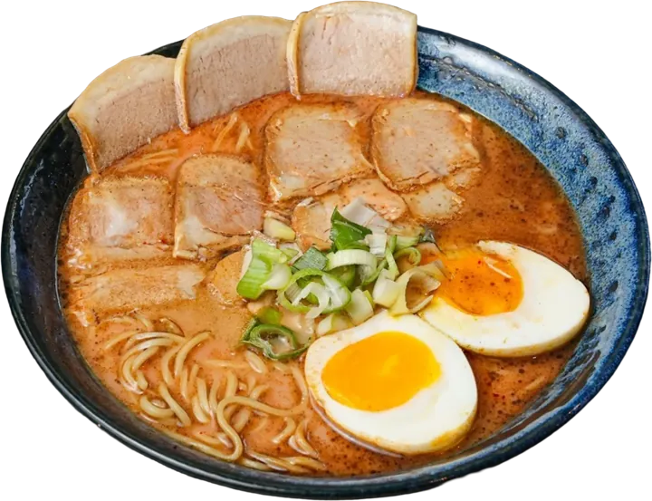
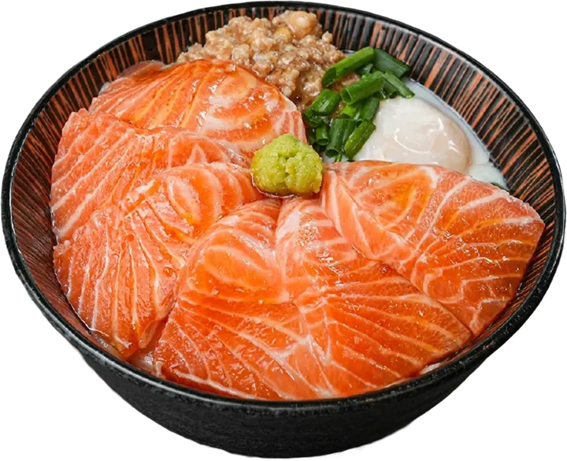
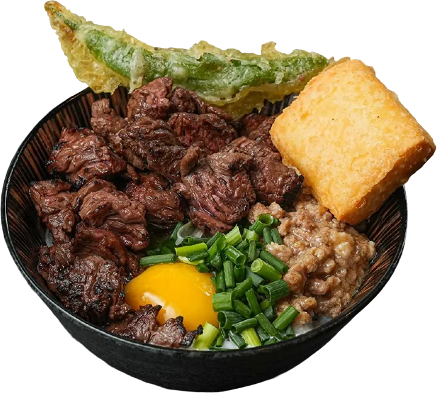
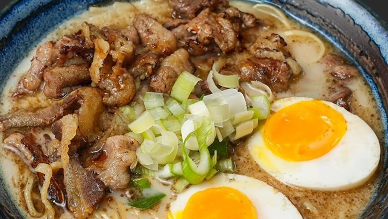
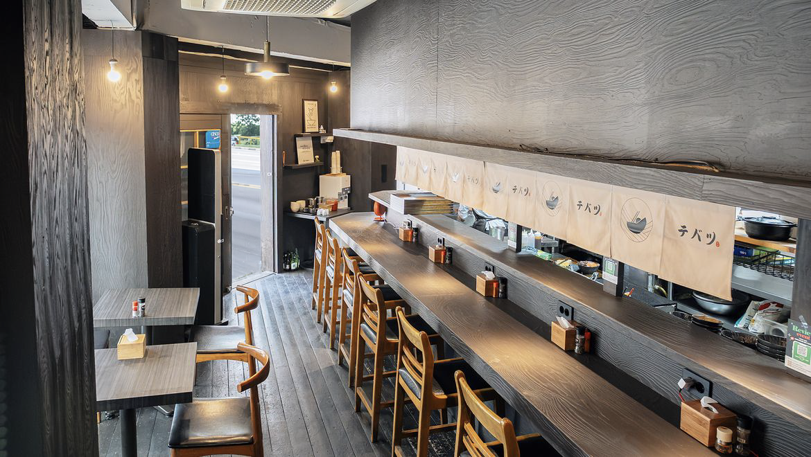
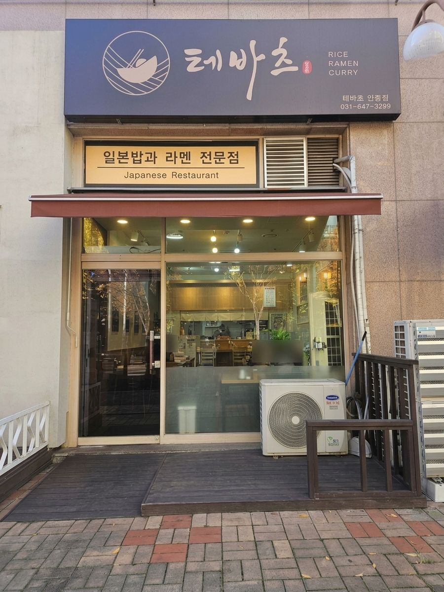
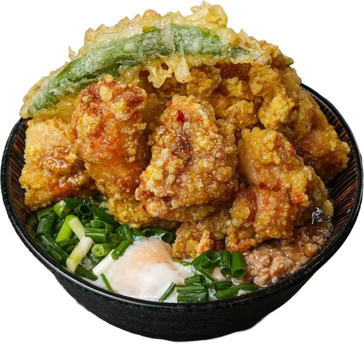

월 평균 매출
2,100만원
홀 1,400만 · 배달 700만
- 일 평균 매출80만원
- 월 수익800만원
- 월 최고 매출2,400만원
일 평균 홀 60만 · 배달 20만
일 최고 홀 120만 · 배달 50만
마음을 담아내는 한 그릇,
지친 일상에 잠시 쉬어가는 나루터,
BRAND
일상 속 작은 일본
현지의 맛과 분위기
‘테바츠’와 함께 떠나는 일식 여행
BRAND STORY
히브리어 ‘테바’
방주 · 갈대상자
일본어 ‘츠’
나루터
방주와 갈대상자를 의미하는 히브리어 테바와 나루터를 의미하는 츠의 의미를 담아
맛과 온기를 담는 쉼터 같은 공간이 되겠습니다.

POINT
일본 현지 전문가에게 직접 사사받아 완성한
정통 라멘과 덮밥의 진수
매장에서 직접 빚어낸 정성 가득한 수제 소스로
깊고 정갈한 풍미 완성
허울 좋은 매출보다 합리적인 운영 구조를 통해
매장의 실질적인 순이익을 최우선으로 지향
메뉴별 원가 효율성을 극대화하여
마진율을 높인 스마트한 구조 설계
점주 혼자서도 완벽하게 운영할 수 있도록 설계된
시스템으로, 인건비 부담을 덜어내는 효율적 구조
과도한 투자 비용을 줄이고 리스크를 최소화하여
누구나 안심하고 시작할 수 있는 소규모 창업
WIN-WIN
기성 프랜차이즈의 본사 중심 경영과
이익분배 구조를 지양하고,
땀 흘린 만큼 점주님들에게 돌아가는
공정한 수익 구조를 지향합니다.
누구든 꿈꿀 수 있는 성장의 발판에
‘테바츠’가 든든한 동반자로 함께 하겠습니다.
저 역시 막막한 마음으로 어렵게 첫발을 내디뎠습니다.
그렇게 시작한 창업 이후, 2호점과 함께 1년동안 매장의 매출과 손님들의 반응을 매일같이 치열하게 살피고 또 살피며 지금에 이르렀습니다.
결코 긴 시간이라 할 수는 없지만, 흔들림 없는 지속적인 매출이 이어지고 있으며 무엇보다 메뉴와 맛을 향한 고객분들의 만족도는 확신으로 자리 잡았습니다.
지난 1년 동안 그 어떤 광고도, 흔한 배달 리뷰 이벤트조차 진행하지 않았습니다. 오직 진심을 담은 맛과 품질, 그리고 발걸음해주신 손님들의 입소문만으로 테바츠는 지금 이 순간에도 꾸준히 성장하고 있습니다.
본고장의 깊이를 담아낸
정통 일본식 라멘과 덮밥
고객의 취향을 사로잡는
폭넓고 조화로운 메뉴 라인업
특정 연령대에 국한되지 않고,
모든 세대가 함께 즐기는 대중적인 맛
어느 하나 치우침 없이, 모든 메뉴가
강력한 시그니처가 되는 뛰어난 완성도
본사가 직접 연구하고 철저히 검증한
트렌디한 신메뉴 지속 공급
홀 운영에 국한되지 않고, 서비스 확장과
매장·가격 이원화를 통한 수익 극대화

SALES
화려한 광고나 배달 리뷰 이벤트 없이,
오직 맛과 품질에 대한 입소문만으로 이뤄낸 투명한 실제 성과입니다.
월 평균 매출
2,100만원
홀 1,400만 · 배달 700만
일 평균 홀 60만 · 배달 20만
일 최고 홀 120만 · 배달 50만
월 평균 매출 (최소)
1,200만원
홀 800만 · 배달 300만
일 평균 홀 35만 · 배달 15만 | 일 최고 80만
주부 첫 창업 · 혼자 근무 · 운영·조리 어려움 없이 만족도 높음

COST
단위: 만원 / VAT 별도
신규 매장 기준
합계5,600만원
기본 설비가 갖춰진 매장 인수 (무권리 또는 소액 권리금)
합계2,100만 원
※ 실제 계약 시 매장에 따라 변동 가능성 있음 (실측 후 비용 확인 가능)
※ 별도 공사: 어닝, 철거, 전기승압, 도시가스, 급배수설비, 에어컨, 외부목공, 덕트, 천장, 소방, 루바, 외부간판, 상부장, 화장실 공조장치
권리금 2,000 + 간판 및 리모델링 500
권리금 0 + 간판 · 메뉴판 · 기본 식기류 1,000
전수 창업 (VAT 별도)
OPENING GUIDE
본사 및 매장 방문 · 가맹지원서 작성
정보공개서 제공
상권 특성 및 주변 상황을 고려한
입지분석 · 시장조사
최종 가맹 본계약 체결
매장 실측 & 관공서 서류 검토
현장관리 · 감독 · 기자재 발주
간판 설치 및 최종 마감공사
점주 · 직원 대상
서비스 및 조리 교육
물류공급 및 본사와 미팅
정식 오픈 전 매장 시범운영
오픈 최종점검 및 지원
식자재 및 설비/기물 입고 · 본사 대표 파견
오픈 준비 체크 & 물류 입고
ASSISTANCE
초보 창업자도 혼자서 완벽하게 매장을 이끌 수 있도록 지원하는 체계적인 현장 교육 및 실전 매뉴얼

맛의 깊이를 더하는 특별한 타래 소스, 육수, 차슈, 카레 등 모든 핵심 재료를 본사가 직접 수작업으로 준비하여 공급하는 과정을 창업자분들께 투명하게 알려드리고 안정적인 조리를 지원

효율적인 주방 및 테이블 동선 설계로 회전율을 극대화하고, 고객에게 편안함을 주는 트렌디하고 따뜻한 공간 연출
COMMUNITY
공지사항과 새로운 소식을 전해드립니다
FAMILY


CONTACT US
누구든 꿈꿀 수 있는 성장의 발판,
테바츠가 든든한 동반자가 되겠습니다